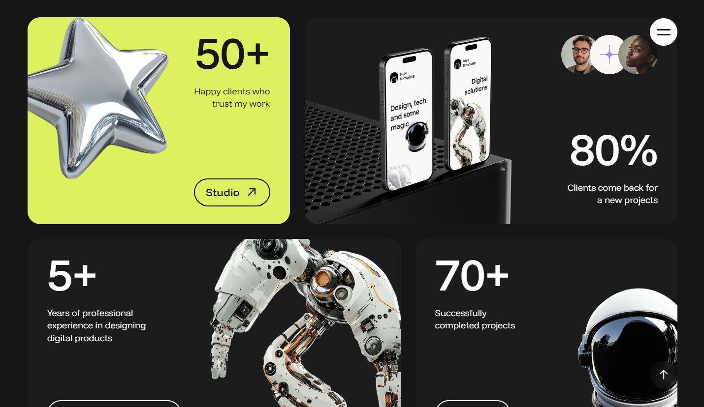
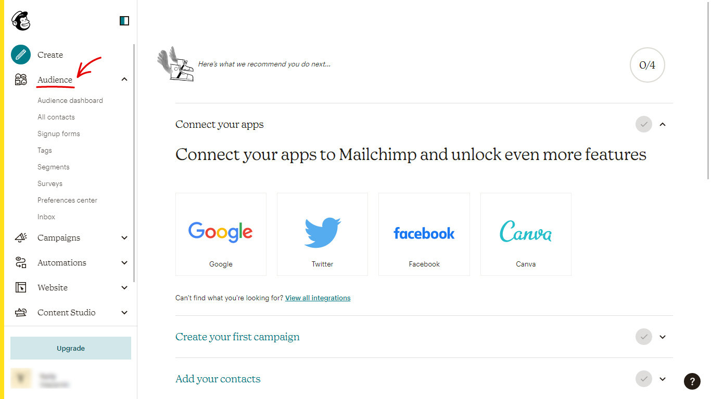
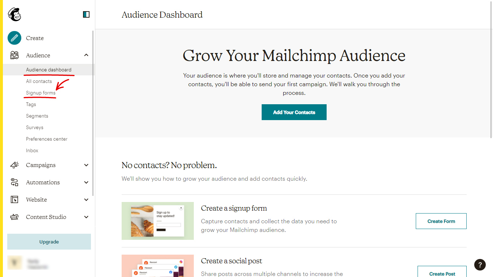
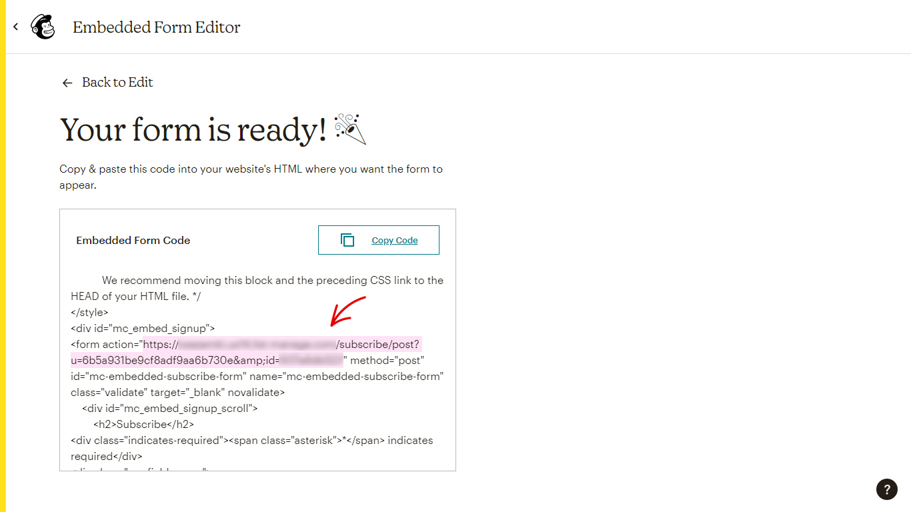

Rayo - Digital Agency & Personal Portfolio HTML Template
by:
mix_design
version: 1.0.0
created: 22 July 2025
last update: 26 August 2025
01
Introduction
Thank you for choosing Rayo - Digital Agency & Personal Portfolio HTML Template. We have prepared detailed documentation to make Rayo customization an easy task for you. If you have any questions that are beyond the scope of this help file, you can email us on support@mixdesign.dev.
We would be very happy if you could rate this item here with 5 stars. Your feedback is very important so write us a line 😀!
02
Installation
Follow the steps below to setup your site template:
-
In order to start working with Rayo unzip the downloaded package and open HTML folder to find all ready-to-use template files. Choose one of the demo index-*.html files (any ready-to-use demo you like) and rename it to index.html.
-
Next you'll need to prepare a project for customization. Below is a list of files and folders that are required in the root directory of your project:
index.html- your chosen *.html file (renamed already);cssfolder - stylesheet files;jsfolder - JavaScript files;fontsfolder - icon fonts files;imgfolder for project images and favicon;videofolder - project video files;mail.phpfile for sending e-mails;.htaccess- this file contain rules for files caching on web server;
-
The other files can be used according to your preferences.
-
Your project is ready to go! Now you can start adding your texts, images and video to your new awesome website.
-
After the customization is over, you'll need to upload the project files to your hosting web server using FTP client or cPanel interface in order to use it on your website.
03
Files Structure
After downloading and extracting template package you'll find 3 folders:
- HTML: ready to use HTML template;
- RayoGULP: if you want to totally customize Rayo, you can use this template;
- Documentation: this help file.
This section describes
HTML
folder structure. More about
RayoGULP
folder structure you can find out in
RayoGULP
section.
Rayo is multi-page HTML template. So, mostly you will need one or more
*.html
file and supporting
*.css,
*.js,
*.php
files with some images. All the directories and files are well organized as it shown on the image bellow.
- all HTML files are located in the root directory;
- separate folders are created for CSS files, JavaScript files, fonts, images and video;
source-filesfolder contains all expanded CSS files, expanded JavaScript files, plugins and components files;mail.phpfile for sending e-mails is located in the root directory;.htaccessfile is located in the root directory. This file contain rules for files caching on the web server.
Demo Pages
Rayo is multi-page HTML template and comes with dark and light color themes, original set of inner pages and 9 ready home pages with various elements:

HTML structure
Each page of the Rayo template has a simple and easy to customize structure based on Bootstrap 5.3.3 Grid. Here is a sample page structure:
<!DOCTYPE html>
<html lang="en" dir="ltr">
<head>
...
</head>
<body>
<!-- Loader Start -->
<div id="loader" class="loader">
...
</div>
<!-- Loader End -->
<!-- Menu & Menu Hamburger Start -->
<nav class="mxd-nav__wrap" data-lenis-prevent="">
...
</nav>
<!-- Menu & Menu Hamburger End -->
<!-- Header Start -->
<header id="header" class="mxd-header">
...
</header>
<!-- Header End -->
<!-- Page Content Start -->
<main id="mxd-page-content" class="mxd-page-content">
...
</main>
<!-- Page Content End -->
<!-- Footer Start -->
<footer id="mxd-footer" class="mxd-footer">
...
</footer>
<!-- Footer End -->
<!-- To Top Button Start -->
<a href="#0" id="to-top" class="btn btn-to-top slide-up anim-no-delay">
<i class="ph ph-arrow-up"></i>
</a>
<!-- To Top Button End -->
<!-- Load Scripts Start -->
<script src="js/libs.min.js"></script>
<script src="js/app.js"></script>
<!-- Load Scripts End -->
</body>
</html>
CSS Files
Rayo template CSS files have a well-organized structure and a table of contents, as you can see on image below:
All CSS files are placed in the
css
folder and should be included in the
<head>
tag.
Rayo uses uncompressed CSS files.
If you want to improve page speed performance, you can use minificated files from
source-files → rayo-css-min-files.
<!-- Template Styles Start-->
<link rel="stylesheet" type="text/css" href="css/loaders/loader.css">
<link rel="stylesheet" type="text/css" href="css/plugins.css">
<link rel="stylesheet" type="text/css" href="css/main.css">
<!-- Template Styles End-->
CSS files that should be included in chosen .html file:
-
loader.css -
plugins.css -
main.css
If you want to customize the CSS styles, we recommend creating your own
custom.css
file and including it in the
Template Styles
section of your
HTML
file. This solution will help you in future updates.
JavaScript Libraries
All JavaScript files are placed in
js
folder and should be included before the
</body>
tag.
libs.min.js- all JavaScript libraries that are necessary for Rayo proper work, are compiled in this file;app.js- includes other scripts calls and settings;
<!-- Load Scripts Start-->
<script src="js/libs.min.js"></script>
<script src="js/app.js"></script>
<!-- Load Scripts End-->
We used minificated
libs.min.js
file to add all necessary JavaScript libraries to this template. The file contains:
- jQuery
- Modernizr
- AjaxChimp
- GSAP
- GSAP ScrollTrigger
- GSAP ScrollTo
- GSAP Flip
- Bootstrap JS Components
- SplitType
- Lenis Smooth Scroll
- imagesLoaded
- Typed.js
- Swiper Slider
- CountUp
- Svg Injector
- Ukiyo
- Magnific Popup
- Masonry Layout
All this uncompressed files you can find in the source-files folder.
04
Fonts
In the Rayo template we used Funnel Display Font, Funnel Sans Font and Phosphor Iconic Font.
Google Fonts
Rayo uses
- Funnel Display font for titles, controls, basic text content and additional text.
- Funnel Sans font if you want to use more calm style.
The font is embedded in the main.css file:
/* ------------------------------------------------*/
/* Fonts Start */
/* ------------------------------------------------*/
/* Funnel Display font */
@import url("https://fonts.googleapis.com/css2?family=Funnel+Display:wght@300..800&display=swap");
/* Funnel Sans font */
@import url("https://fonts.googleapis.com/css2?family=Funnel+Sans:ital,wght@0,300..800;1,300..800&display=swap");
/* ------------------------------------------------*/
/* Fonts End */
/* ------------------------------------------------*/You can customize this font or embed another fonts for your project with Google Fonts. In this case, you'll also need to change the fonts in the css files per your fonts used.
Phosphor Icons
Rayo uses Phosphor iconic font. You can use phosphoricons.com page to easily find the icon you want to use. All icons are already compiled in the plugins.css file and ready for use.
To insert icon in your project, just choose Web tab and copy the code: <i class="ph ph-heart"></i>, <i class="ph ph-arrow-up"></i>, <i class="ph ph-instagram-logo"></i>.
<li>
<a href="https://www.instagram.com/" target="_blank">
<i class="ph ph-instagram-logo"></i>
</a>
</li>For more information about Phosphor icons, please visit the official documentation site - Phosphor Docs.
05
Favicon and Apple touch icons
Rayo covers all modern design requirements for favicons and icons across platforms:
Classic favicon:
<link rel="icon" href="img/favicon/favicon.ico" sizes="any">
Android Web App Manifest & Apple Touch Icon:
<link rel="apple-touch-icon" href="img/favicon/apple-touch-icon.png">
<link rel="manifest" href="img/favicon/manifest.webmanifest">
Universal SVG Icon for All Sizes and Dark & Light Browser Color Themes:
<link rel="icon" href="img/favicon/icon.svg" type="image/svg+xml">
Facebook Metadata:
<!-- Facebook Metadata Start -->
<meta property="og:image:height" content="1200">
<meta property="og:image:width" content="1200">
<meta property="og:title" content="Rayo - Digital Agency & Personal Portfolio HTML Template">
<meta property="og:description" content="Elevate your digital presence with Rayo - dynamic and stylish HTML template designed for creative agencies and personal brands. With modern layouts, smooth interactions and a polished aesthetic, Rayo template helps showcase projects, services and expertise with clarity and impact.">
<meta property="og:url" content="https://mixdesign.club/themeforest/rayo">
<meta property="og:image" content="https://mixdesign.club/themeforest/rayo/img/og-image.jpg">
<!-- Facebook Metadata End -->
You can use Rayo favicon as an example or generate a new one with RealFaviconGenerator or any other favicon generator according to your needs.
06
Customization
Rayo template comes with easily customizable page elements. You can choose from 9 ready-to-use demo files, 2 color themes, various page elements and blocks and much more.
Preloader
Loader will hide contents of your site until it's fully loaded. If you want to customize the loader find this code in *.html file:
<!-- Loader Start -->
<div id="loader" class="loader">
<div class="loader__wrapper">
<div class="loader__content">
<div class="loader__count">
<span class="count__text">0</span>
<span class="count__percent">%</span>
</div>
</div>
</div>
</div>
<!-- Loader End -->Loader styles are included in the <head> tag:
<!-- Template Styles Start-->
<link rel="stylesheet" type="text/css" href="css/loaders/loader.css">
...
<!-- Template Styles End-->If you want to remove the loader first you need to delete it from the *.html file:
<!-- Loader Start -->
<div id="loader" class="loader">
<div class="loader__wrapper">
<div class="loader__content">
<div class="loader__count">
<span class="count__text">0</span>
<span class="count__percent">%</span>
</div>
</div>
</div>
</div>
<!-- Loader End -->And also you'll need to open app.js file, find "Loader & Loading Animation" section and replace all the code in the section to this one:
// --------------------------------------------- //
// Loader & Loading Animation Start
// --------------------------------------------- //
const content = document.querySelector('body');
const imgLoad = imagesLoaded(content);
const loadingWrap = document.querySelector('.loading-wrap');
const loadingItems = loadingWrap.querySelectorAll('.loading__item');
const fadeInItems = document.querySelectorAll('.loading__fade');
imgLoad.on('done', instance => {
pageAppearance();
});
function pageAppearance() {
gsap.set(loadingItems, { opacity: 0 })
gsap.to(loadingItems, {
duration: 1.1,
ease: 'power4',
startAt: {y: 120},
y: 0,
opacity: 1,
delay: 0.8,
stagger: 0.08
}, '>-=1.1');
gsap.set(fadeInItems, { opacity: 0 });
gsap.to(fadeInItems, { duration: 0.6, ease: 'none', opacity: 1, delay: 0.8 });
}
// --------------------------------------------- //
// Loader & Loading Animation End
// --------------------------------------------- //Done! Now the loader is removed and the page works as it should.
Color themes
Rayo template provides 2 color themes and 9 ready-to-use demo pages. The template automatically detects the color theme of the device and applies the same - dark or light. You can change the color theme by clicking the color theme switcher.
It's easy to change the dark and light color themes by changing the default variables in the main.css file:
:root {
...
/* light color scheme */
--base--light: #FAF7F6;
...
/* dark color scheme */
--base--dark: #161616;
...
/* permanent colors */
--pt-base: #FFFFFF;
...
}- Dark Color Skin
- Light Color Skin
Feel free to experiment!
Logo
The logo container is located in the header and contains the SVG image and the text part:
<!-- Header Start -->
<header id="header" class="mxd-header">
<!-- header logo -->
<div class="mxd-header__logo loading__fade">
<a href="index-main.html" class="mxd-logo">
<!-- logo icon -->
<svg class="mxd-logo__image" version="1.1" xmlns="http://www.w3.org/2000/svg" x="0px" y="0px" viewBox="0 0 56 56" style="enable-background:new 0 0 56 56;" xml:space="preserve">
...
</svg>
<!-- logo text -->
<span class="mxd-logo__text">rayo<br>template</span>
</a>
</div>
...
</header>
<!-- Header End --> Please note! If you want to change the logo color with the color theme switch button,
you need to use the inline SVG image code with the fill="currentColor" property or use CSS variables in the CSS part of the inline SVG image:
<svg xmlns="http://www.w3.org/2000/svg" width="50px" height="50px" viewBox="0 0 50 50" fill="currentColor">
<path id="caption" fill="currentColor" d="..."/>
<path id="logo" fill="currentColor" d="..."/>
</svg><!-- logo icon -->
<svg class="mxd-logo__image" version="1.1" xmlns="http://www.w3.org/2000/svg" x="0px" y="0px" viewBox="0 0 56 56" style="enable-background:new 0 0 56 56;" xml:space="preserve">
<style type="text/css">
.mxd-logo__bg{fill:var(--base-opp);}
.mxd-logo__cat{clip-path:url(#mxd-logo__id);fill:var(--base);}
</style>
<path class="mxd-logo__bg" d="..."/>
<g>
<defs>
<path id="mxd-logo__clippath" d="..."/>
</defs>
<clipPath id="mxd-logo__id">
<use xlink:href="#mxd-logo__clippath" style="overflow:visible;"/>
</clipPath>
<path class="mxd-logo__cat" d="..."/>
</g>
</svg>Of course, you can use an ordinary <img> tag, but in this case the logo won't change it's color with the theme.
Images
All images used in the Rayo template live demo are just for preview purposes only and they are not included in the main download files. You can easily find all images on freepik.com or pexels.com. We use placeholders from dummyimage.com instead of real images. You can easily replace placeholder URL with a path to your image like img/yourimage.jpg.
All template background images you can replace in the main.css file:
/* ------------------------------------------------*/
/* Template Backgrounds Start */
/* ------------------------------------------------*/
.about-image-1 {
background-image: url("https://dummyimage.com/1400x1000/5d5d5d/838383");
}
...
/* ------------------------------------------------*/
/* Template Backgrounds End */
/* ------------------------------------------------*/Header
Rayo template comes with 1 header type with left aligned logo and right aligned menu trigger.
Desktop view:
Mobile view:
The header contains the logo and the controls container. You can find the header in the beginning of the *.html file:
<!-- Header Start -->
<header id="header" class="mxd-header">
<!-- header logo -->
<div class="mxd-header__logo loading__fade">
...
</div>
<!-- header controls -->
<div class="mxd-header__controls loading__fade">
...
</div>
</header>
<!-- Header End -->07
Plugins
Animated Headline
We used Typed.js plugin for an animated headline feature. To customize an animated headline,
you need to find the following markup in the main section of the *.html file and change the content of <b> tags:
<h1 class="inner-headline__title animated-type loading__item">
<span id="typed-strings">
<b>UI designer</b>
<b>3D Artist</b>
<b>Illustrator</b>
</span>
<span id="typed"></span>
</h1>You can find the headline settings (such as typing speed) in the app.js file:
// --------------------------------------------- //
// Typed.js Plugin Settings Start
// --------------------------------------------- //
var animatedHeadline = $(".animated-type");
if(animatedHeadline.length){
var typed = new Typed('#typed', {
stringsElement: '#typed-strings',
showCursor: true,
cursorChar: '_',
loop: true,
typeSpeed: 70,
backSpeed: 30,
backDelay: 2500
});
}
// --------------------------------------------- //
// Typed.js Plugin Settings End
// --------------------------------------------- //Visit Typed.js plugin website for more details and settings - mattboldt.com/demos/typed-js
Swiper Slider
Rayo uses Swiper Slider Plugin for 3 versions of the testimonials slider. It's a simple sliders with navigation buttons, illustrations, slide and fade effects:
Version #1
Version #2
Version #3
These sliders have similar markup and settings.
<!-- Testimonials Slider Start -->
<div class="testimonials-slider overflow-hidden anim-uni-in-up">
<!-- slider main container -->
<div class="swiper-testimonials">
<!-- additional required wrapper -->
<div class="swiper-wrapper">
<!-- single slide -->
<div class="swiper-slide">
...
</div>
...
</div>
<!-- navigation buttons -->
<div class="swiper-button-prev mxd-slider-btn mxd-slider-btn-round-prev animate-card-2">
<a class="btn btn-round btn-round-small btn-outline slide-left anim-no-delay" href="#0">
<i class="ph ph-arrow-left"></i>
</a>
</div>
<div class="swiper-button-next mxd-slider-btn mxd-slider-btn-round-next animate-card-2">
<a class="btn btn-round btn-round-small btn-outline slide-right anim-no-delay" href="#0">
<i class="ph ph-arrow-right"></i>
</a>
</div>
</div>
<div class="testimonials-slider__shadow"></div>
</div>
<!-- Testimonials Slider End -->
Find the Load Scripts section at the end of the <body> tag and make sure that all the necessary js files are added in the following order:
- libs.min.js
- app.js
<!-- Load Scripts Start -->
<script src="js/libs.min.js"></script>
<script src="js/app.js"></script>
<!-- Load Scripts End -->
If you want to change the settings of the slider, find the
app.js
file in the
js
folder and make the necessary changes to the Swiper init lines:
const swiper = new Swiper('.swiper-testimonials', {
slidesPerView: 'auto',
grabCursor: true,
spaceBetween: 30,
autoplay: true,
delay: 3000,
speed: 1000,
loop: true,
parallax: true,
loopFillGroupWithBlank: true,
pagination: {
el: ".swiper-pagination",
type: "fraction",
},
navigation: {
nextEl: '.swiper-button-next',
prevEl: '.swiper-button-prev',
},
});
More information about the Swiper settings you can find in the official documentation - swiperjs.com/get-started
Magnific Popup
Rayo uses Magnific Popup to display pop-up videos.
Add a video link to href property and the showreel-trigger class.
<a href="https://vimeo.com/65036292" id="showreel-trigger" class="btn-rotating btn-rotating-blur-outline showreel-trigger">
<!-- SVG rotating text -->
<svg version="1.1" id="scrollDown" xmlns="http://www.w3.org/2000/svg" xmlns:xlink="http://www.w3.org/1999/xlink" x="0px" y="0px"
viewBox="0 0 160 160" style="enable-background:new 0 0 160 160;" xml:space="preserve"
class="btn-rotating__text animate-rotation" data-value="360">
...
</svg>
<!-- image -->
<img class="btn-rotating__image" src="img/icons/300x300_obj-btn-02.webp" alt="Object">
</a>All popup parameters you can change in the app.js file:
// --------------------------------------------- //
// Magnific Popup Video Start
// --------------------------------------------- //
$('#showreel-trigger').magnificPopup({
type: 'iframe',
mainClass: 'mfp-fade',
removalDelay: 160,
preloader: false,
fixedContentPos: false,
callbacks: {
beforeOpen: function() { $('body').addClass('overflow-hidden'); lenis.stop(); },
close: function() { $('body').removeClass('overflow-hidden'); lenis.start(); }
}
});
// --------------------------------------------- //
// Magnific Popup Video End
// --------------------------------------------- //See dimsemenov.com/plugins/magnific-popup page for more settings.
CountUp Plugin
Rayo uses Count Up Plugin for statistics cards counters.
Use 0 in the HTML markup:
<div class="mxd-counter align-end">
<p id="stats-counter-1" class="mxd-counter__number mxd-stats-number opposite">0</p>
<p class="mxd-counter__descr t-140 t-bright opposite">Happy clients who<br>trust my work</p>
</div>
Find the Load Scripts section at the end of the <body> tag and make sure that all the necessary js files are added in the following order:
- libs.min.js
- app.js
<!-- Load Scripts Start -->
<script src="js/libs.min.js"></script>
<script src="js/app.js"></script>
<!-- Load Scripts End -->
In the end of the
*.html
page find counters start scripts. You can change the numbers and the suffix options here:
<!-- counters -->
<script>
const statsCounter1 = new countUp.CountUp("stats-counter-1", 50, optionsPlus);
const statsCounter2 = new countUp.CountUp("stats-counter-2", 80, optionsPercent);
const statsCounter3 = new countUp.CountUp("stats-counter-3", 5, optionsPlus);
const statsCounter4 = new countUp.CountUp("stats-counter-4", 70, optionsPlus);
statsCounter1.start();
statsCounter2.start();
statsCounter3.start();
statsCounter4.start();
</script>
Change suffixes and other options in the app.js file:
// --------------------------------------------- //
// CountUp - All Counters Options Start
// --------------------------------------------- //
const optionsNormal = {
enableScrollSpy: true
};
const optionsDecimal = {
decimalPlaces: 1,
enableScrollSpy: true
};
const optionsDecimalTwo = {
decimalPlaces: 2,
enableScrollSpy: true
};
const optionsPercent = {
suffix: '%',
enableScrollSpy: true
};
const optionsK = {
suffix: 'K',
enableScrollSpy: true
};
const optionsPlus = {
suffix: '+',
enableScrollSpy: true
};
// --------------------------------------------- //
// CountUp - All Counters Options End
// --------------------------------------------- //
More information about CountUp settings you can find in the official documentation - inorganik.github.io/countUp.js
Svg Injector
Rayo uses the Svg Injector Plugin
inline SVG DOM injection. All SVG icons are now inserted in the HTML with the code.
But you can use the img tag and the inject-me class to insert SVGs with plugin:
<img class="inject-me" src="img/icons/20x20-rayo-star.svg" alt="Divider Icon">
Find the Load Scripts section at the end of <body> and make sure that all the necessary js files are added in the following order:
- libs.min.js
- app.js
<!-- Load Scripts Start -->
<script src="js/libs.min.js"></script>
<script src="js/app.js"></script>
<!-- Load Scripts End -->
If you want to change the settings of this plugin find the
app.js
file in the
js
folder and make the necessary changes to the SVG DOM Injection lines:
// --------------------------------------------- //
// SVG DOM Injection Start
// --------------------------------------------- //
var mySVGsToInject = document.querySelectorAll('img.inject-me');
var injectorOptions = {
evalScripts: 'once',
pngFallback: 'assets/png',
each: function (svg) {
}
};
SVGInjector(mySVGsToInject, injectorOptions, function (totalSVGsInjected) {
console.log('We injected ' + totalSVGsInjected + ' SVG(s)!');
});
// --------------------------------------------- //
// SVG DOM Injection End
// --------------------------------------------- //
More information about Svg Injector settings you can find on the official page - github.com/iconic/SVGInjector
Ukiyo
Rayo uses the Ukiyo Plugin to create modern parallax images and videos.
You can use it for img, picture, video and background-image elements.
We have 3 predefined classes:
.parallax-img.parallax-img-small.parallax-video
Here we use Ukiyo for the background-image element:
<div class="mxd-blog-preview__image blog-preview-image-1 parallax-img-small"></div>
Also you can use the class for the img tag the same way:
<div class="mxd-blog-preview__image">
<img class="parallax-img-small" src="img/blog/preview/1000x1250_prv-01.webp" alt="Blog Preview Image">
</div>
Find the Load Scripts section at the end of <body> and make sure that all the necessary js files are added in the following order:
- libs.min.js
- app.js
<!-- Load Scripts Start -->
<script src="js/libs.min.js"></script>
<script src="js/app.js"></script>
<!-- Load Scripts End -->
If you want to change the settings of this plugin, find the
app.js
file in
js
folder and make the necessary changes to the Ukiyo lines:
// --------------------------------------------- //
// Parallax - Ukiyo Images & Video Start
// --------------------------------------------- //
const images = document.querySelectorAll(".parallax-img");
const imagesSmall = document.querySelectorAll(".parallax-img-small");
const video = document.querySelectorAll(".parallax-video");
new Ukiyo(images,{
scale: 1.5,
speed: 1.5,
externalRAF: false,
});
new Ukiyo(imagesSmall,{
scale: 1.2,
speed: 1.5,
externalRAF: false
});
new Ukiyo(video,{
scale: 1.5,
speed: 1.5,
externalRAF: false
});
// --------------------------------------------- //
// Parallax - Ukiyo Images & Video End
// --------------------------------------------- //
More information about Uliyo settings you can find on the official page - ukiyo-js.dev
08
Animated Backgrounds
All backgrounds CSS styles are compiled in the plugins.css file so you don't need to add any CSS files.
Parallax Images
This background effect is created using a *.webp images with transparent background:
<!-- Hero Background Start -->
<div class="mxd-page-bg hero-04-bg loading__fade">
<div class="hero-04-bg__obj-01" data-speed="0.5">
<img class="mxd-move" src="img/hero/05_hero-img.webp" alt="Background Image">
</div>
<div class="hero-04-bg__obj-02" data-speed="0.7">
<img class="mxd-move" src="img/hero/05_hero-img.webp" alt="Background Image">
</div>
</div>
<!-- Hero Background End -->Replace the placeholder with your image directly in the *.html file. You can use *.webp or *.png images.
Parallax scroll animation is provided by GSAP and scrollTrigger. If you want to change the scroll speed for any object, just add the data-speed property:
<div class="mxd-page-bg hero-04-bg loading__fade">gsap.to("[data-speed]", {
y: (i, el) => (1 - parseFloat(el.getAttribute("data-speed"))) * ScrollTrigger.maxScroll(window) ,
ease: "none",
scrollTrigger: {
start: 0,
end: "max",
invalidateOnRefresh: true,
scrub: 0
}
});09
Forms
Rayo template is provided with 2 working form types:
Mailchimp Subscription Form
In the footer on every page you can find the subscription form. This active form will save emails to the MailChimp list.
<!-- subscribe form -->
<form class="form notify-form form-light">
<input type="email" placeholder="Your Email" required>
<button class="btn btn-form btn-absolute-right btn-muted slide-right-up anim-no-delay" type="submit">
<i class="ph ph-arrow-up-right"></i>
</button>
</form>JavaScript files that have to be included:
- libs.min.js
- app.js
<!-- Load Scripts Start-->
<script src="js/libs.min.js"></script>
<script src="js/app.js"></script>
<!-- Load Scripts End-->Follow these steps to get the Mailchimp list URL:
- Login or create an account on mailchimp.com and go to the
Audiencesection. - Choose "Signup Forms" from the list:
- Find "Embedded forms" and click "Select":

- The form, you'll see on the next screen fits for our "Subscribe" form, so click "Continue":

- Now the form is ready and you need to copy action URL from the form - highlighted in pink:
- Add
https://if it is not included with the MailChimp list URL.
Open app.js file from the js folder. Just replace our Mailchimp form action URL with your Mailchimp list URL:
$('.notify-form').ajaxChimp({
callback: mailchimpCallback,
// Replace this Mailchimp form action URL with your Mailchimp list URL
url: 'https://besaba.us10.list-manage.com/subscribe/post?u=e8d650c0df90e716c22ae4778&id=YOUR_LIST_ID'
});Done! Now you can save emails to your MailChimp Audience List!
Contact Form
Rayo template has integrated ajax contact form.
It's very easy to set up this forms to receive feedback on your e-mail:
- First of all you need to make sure that
mail.phpfile is added to the root directory of your project. - Then find the
<form>tag withid="contact-form"in the*.htmlfile. - This form contains 3 hidden required inputs. Replace data in the value parameter of these hidden fields:
<!-- Contact Form Start --> <form class="form contact-form" id="contact-form"> <!-- Hidden Required Fields --> <input type="hidden" name="project_name" value="Rayo Template"> <input type="hidden" name="admin_email" value="support@mixdesign.dev"> <input type="hidden" name="form_subject" value="Contact Form Message"> <!-- END Hidden Required Fields--> ... </form> <!-- Contact Form End --> - Check the connection of JavaScript files.
JavaScript files that need to be included:
- libs.min.js
- app.js
<!-- Load Scripts Start-->
<script src="js/libs.min.js"></script>
<script src="js/app.js"></script>
<!-- Load Scripts End-->Done! Now you can receive messages on your e-mail.
10
RayoGULP
If you want to totally customize Rayo, you can use our all-inclusive RayoGULP template. RayoGULP includes Bootstrap 5 Grid, Gulp, Sass, Bourbon, Autoprefixer, Browsersync, Clean-CSS, CSS Beautify, Uglify, and other packages for efficient and comfortable work.
RayoGULP requires node, npm and git.
Getting started
Install Node Modules: npm i
Run RayoGULP: gulp
Project structure
- The source code is located in the
appdirectory; - SASS files are located in the
sassdirectory; - The
distfolder is a production folder. It contains ready project with optimized HTML, CSS, JS and images.
Gulp tasks
gulp: run default gulp task for web development;
build: build project to dist folder;
clearcache: clear all gulp cache.
If you have any questions about RayoGULP, you can email us on support@mixdesign.dev.
11
Changelog
Version 1.0.0 22 July 2025
- Initial release
Version 1.0.0 26 August 2025
- Main Home hero section animation improvement;
- Documentation update.
12
Credits
CSS and JavaScript files
- jQuery - jquery.com
- Modernizr - modernizr.com
- GSAP - gsap.com
- GSAP ScrollTrigger - gsap.com/docs/v3/Plugins/ScrollTrigger
- GSAP ScrollTo - gsap.com/docs/v3/Plugins/ScrollToPlugin
- GSAP Flip - gsap.com/docs/v3/Plugins/Flip
- Lenis Smooth Scroll - lenis.studiofreight.com
- Bootstrap 5 grid and JS components - getbootstrap.com
- imagesLoaded - github.com/desandro/imagesloaded
- SplitType - github.com/lukePeavey/SplitType
- Typed.js - mattboldt.com/demos/typed-js
- Magnific Popup - dimsemenov.com/plugins/magnific-popup
- Swiper Slider - swiperjs.com
- CountUp - inorganik.github.io/countUp.js
- Svg Injector - github.com/iconic/SVGInjector
- Ukiyo - ukiyo-js.dev
- Masonry Layout - masonry.desandro.com
- AjaxChimp - github.com/scdoshi/jquery-ajaxchimp
- UniMail - github.com/agragregra/uniMail
Icons and images
- Icons - Phosphoricons.com
- Images - Freepik.com and Pexels.com
- Mockups - Designdeck.io, Unblast.com and Minimalmockups.com